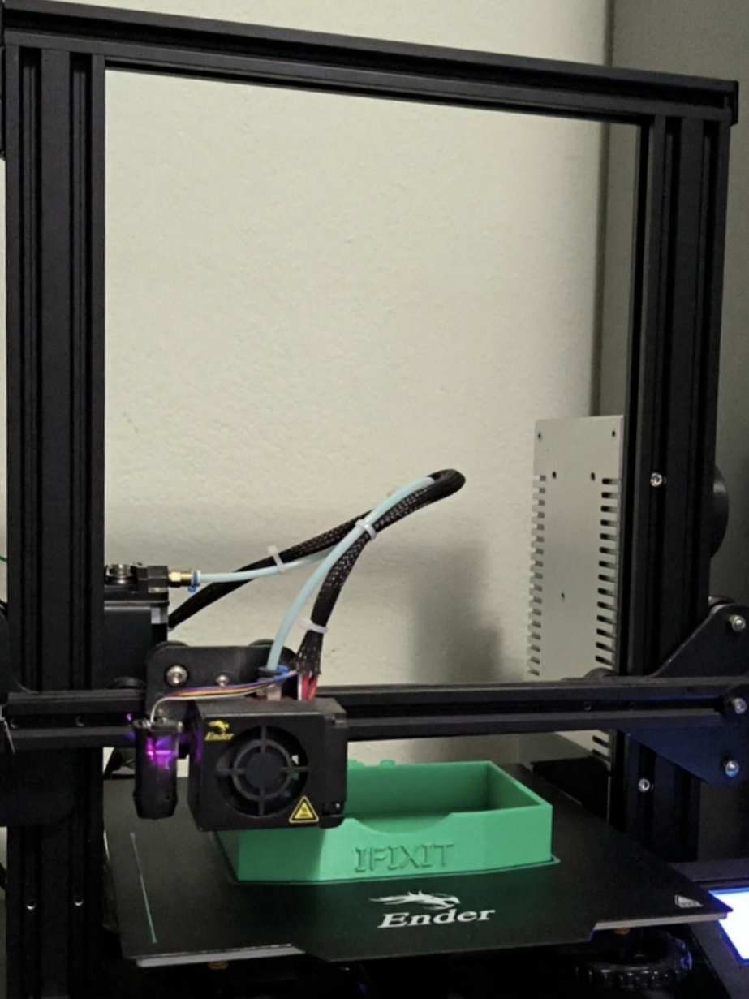

3D tisk
Zaměřuji se také na 3D tisk, ať už jde o jednoduchý díl, nebo něco složitějšího
Zaměřuji se spíše na takové modely, které budou v ideálních podmínkách, kvůli materiálu (PLA)
Jsem stále začátečník v 3D Tisku, a proto jsem si jako začátečník koupil 3D tiskárnu Creality Ender 3, která umí zatrápit i zkušené tiskaře, kteří touto tiskárnou neprošli
Kupoval jsem ji tehdy z bazoše asi za 2 000 Kč, trápení přišlo hned potom co jsem ji koupil a zjistil, že ji neumím ani zkalibrovat
Proto jsem strávil dva dny, abych zjistil vše základní, co potřebuji, protože jsem před nastudováním znal jen, že musím použít na tiskárnu slicer. A to že model je soubor s příponou .stl a pro tiskárnu je .gcode.
Po asi 2 mesících mě přestala bavit ruční kalibrace podložky pomocí koleček, koupil jsem si CR-Touch, který má za úkol zjistit nerovnosti a následně je při tisku vyrovnat pomocí změny pozice Z-Osy (tedy výšku extruderu)
Pokud budete chít něco vytisknout, mužete jít na moje aukro na tuto nabídku: 3D tisk na zakázku (postupujte podle pokynů na nabídce)
Do budoucna plánuji si koupit lepší model (BambuLab, Creality, Prusa), ale zatím jedu na tom, co mám
Na fotografiích můžete vidět, co vše jsem už dělal (nejen pro sebe)
